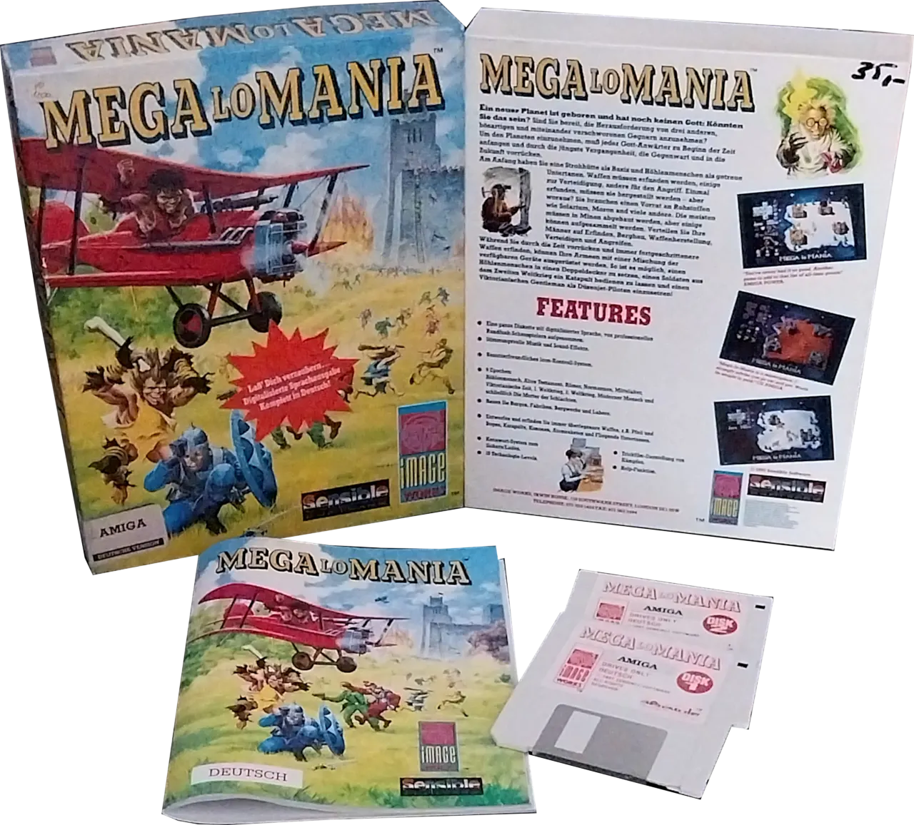
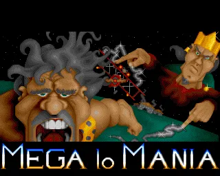
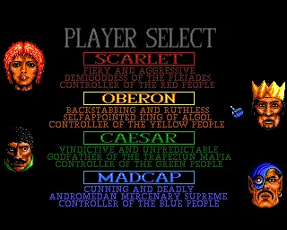
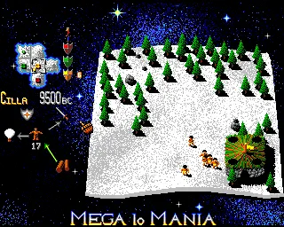

Entwickler: Sensible Software
Publisher: Image Works
Genre: Echtzeitstrategie
Plattform: Amiga, Atari ST, DOS
Erscheinungsjahr: 1991
In Mega Lo Mania übernimmt der Spieler die Kontrolle über eine aufstrebende Zivilisation und führt sie von der Steinzeit bis in das Atomzeitalter. Forschung, Ressourcenmanagement und taktische Kämpfe entscheiden darüber, welcher Gott am Ende die Vorherrschaft über die Welt erringt.




Mega Lo Mania bietet auch heute noch ein außergewöhnliches Spielkonzept, das Forschung, Strategie und Zeitmanagement auf einzigartige Weise verbindet. Der ständige technologische Fortschritt sorgt für abwechslungsreiche Partien und macht den Titel bis heute zu einem der originellsten Strategiespiele seiner Generation.